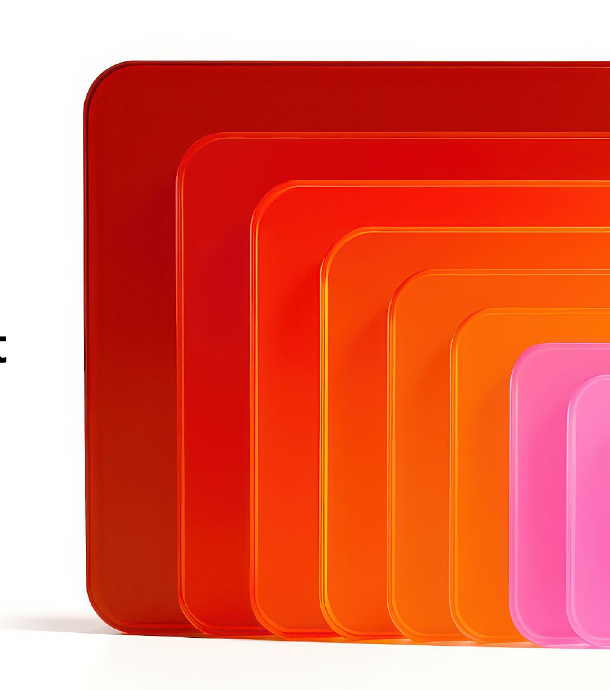
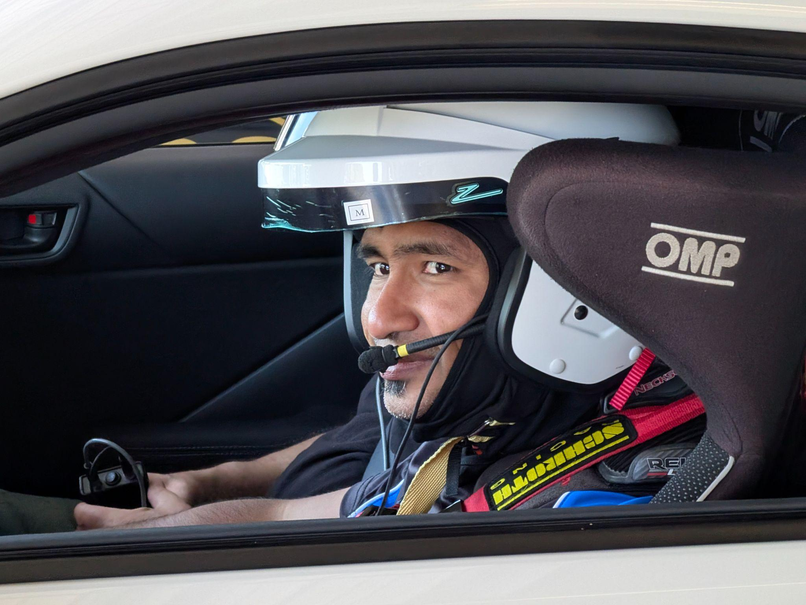
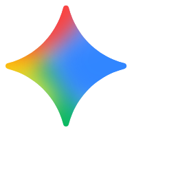
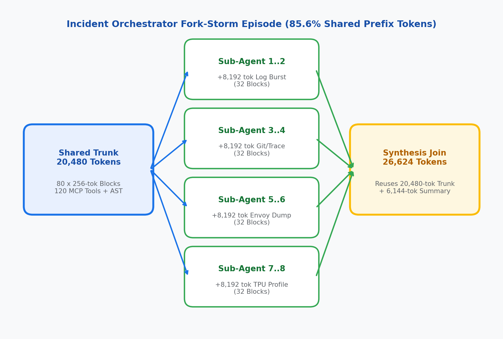
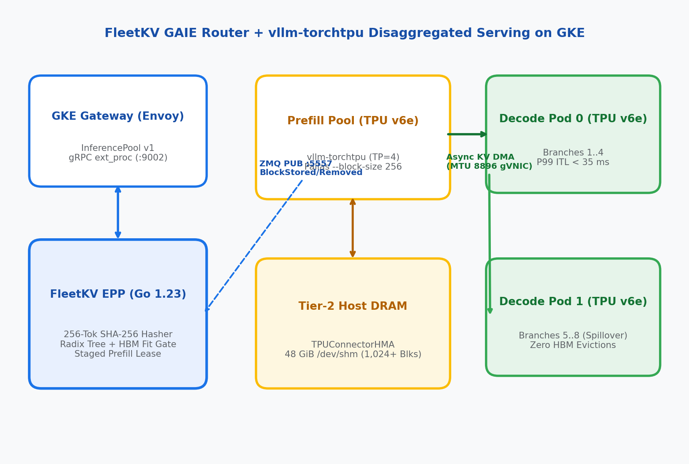
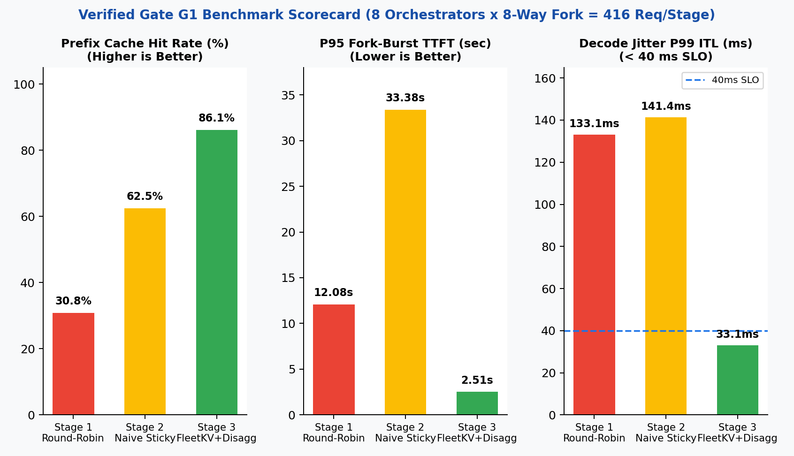
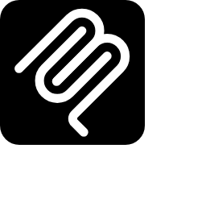

Defeating the Prefix-Cache Penalty:
KV-Aware Routing & Disaggregated Serving
for Agent Fleets on GKE
Gateway API Inference Extension (v1) • llm-d DisaggregatedSet • vllm-torchtpu • Cloud TPU v6e



Rabimba
Karanjai
Google Developer Expert — AI & ML
ML Scientist — PayPal
Scan to Grab the Companion Artifact & Slides
Every GKE manifest, Go ext_proc router package, and automated test gate (make gate-all) is in the repo.
KubeCon 2026 Repo
github.com/rabimba/GDE-ML-Artifacts/tree/main/KubeCon26Go 1.23 FleetKV EPP router, TPU v6e DisaggregatedSet YAML & Digital Twin.
Interactive Web Deck
rabimba.github.io/.../KubeCon26/slidesFollow along with live speaker notes (press S) and copyable YAML/Go snippets.
GAIE Upstream Docs
gateway-api-inference-extension.sigs.k8s.ioKubernetes SIG Networking Gateway API Inference Extension v1 specification.
Chatbots Are Lines. Agent Fleets Are Trees.

Linear Chatbot Traffic
- Single user typing one turn every 15 to 30 seconds
- Short system prompt (~1,024 tokens)
- Predictable, incremental KV cache growth per session
- Independent sessions rarely share 20K-token prefixes at millisecond zero
SWE / SRE Agent Fleet (Fork-Storm)
- 20,480-Token Trunk: 120 MCP tool schemas + repo AST + alert state (80 x 256-tok blocks)
- 8-Way Parallel Fork: Orchestrator spawns 8 specialist sub-agents at t = 0 ms
- Log Bursts: Each sub-agent appends +8,192 tokens of kubectl logs / diffs on Turn 2
- Synthesis Join: Orchestrator merges all 8 sub-agent findings (85.6% prefix overlap)
Anatomy of an 8-Way Incident Orchestrator Fork-Storm
20,480-Token Shared Parent Trunk -> 8 Concurrent Sub-Agent Branches -> Join
Every 256-token block hash in the 80-block parent trunk is identical across all 8 child sub-agents:
- Blocks 0..1 (512 tok): Global MCP tool bootstrap shared across all cluster orchestrators.
- Blocks 2..79 (19,968 tok): Incident repository AST + active alert context (80 blocks total trunk).
- Turn 1..4 Branch Deltas: 8 parallel specialists append +512 tok role, +8,192 tok log burst, +1,024 tok config/patch.
- Synthesis Join (26,624 tok): Orchestrator re-attaches the 80-block trunk plus a 24-block branch synthesis.

🔍 Click diagram to enlarge full-screenFailure Mode 1: Stateless K8s Round-Robin
Standard ClusterIP Service (1/N Scatter Misses)
- 1/N Cache Scatter: Pods 0..3 each recompute the same 20,480-token parent trunk on their MXUs (~30.8% hit rate).
- Duplicate HBM Residency: Identical 20,480-token FP8 KV blocks occupy N x High-Bandwidth Memory across the pool.
- Prefill-Decode Interference: Co-located 8,192-token log-burst prefills stall active decode streams past 133 ms P99 ITL.
Failure Mode 2: The Prefix-Herd Trap
Naive Longest-Prefix Sticky Routing (argmax MatchedBlocks)
- Single-Pod Stampede: All 8 forked sub-agents match 80/80 trunk blocks on Pod 0; naive routing herds 8/8 branches onto Pod 0.
- Serial MXU Queueing: Pod 0 queues all 8 bursts serially while Pods 1..3 sit idle, spiking P95 TTFT to 33.4s (worse than Round-Robin!).
- HBM Self-Eviction: 8 diverging branches exceed Pod 0's 360-block HBM budget and LRU-evict their own parent trunk before Join.
Why KV-Aware Routing & Disaggregation Need Each Other
Solving both 1/N scatter misses and fork-storm herding requires coordinating the GAIE control plane with a disaggregated Prefill/Decode data plane:
- • 1. Compute the Shared Trunk Once on Prefill TPUs: Prefill pods compute the 20,480-token trunk once and back their 360-block HBM cache with 48 GiB of Tier-2 Host DRAM (/dev/shm via TPUConnectorHMA).
- • 2. Gate Admission on HBM Block Fit: Before routing a forked branch, FleetKV checks whether the branch horizon + 24-block safety reserve fits in free HBM; overflow branches spill cleanly to peer pods.
- • 3. Isolate Log-Burst Prefills from Decode ITL: 8,192-token Turn 2 log bursts execute on dedicated Prefill MXUs so Decode TPUs stream tokens uninterrupted at 27–33 ms P99 ITL (< 40 ms SLO).
- • 4. Stream KV Blocks Over MTU-8896 gVNIC: TPUConnectorHMA transfers delta KV blocks asynchronously over jumbo-frame gVNIC from Prefill TPUs to whichever Decode pod has HBM headroom.
Control Plane: Fit-Aware Tree Routing in GAIE ext_proc
router/pkg/scorer/policies.go — Hard HBM Fit Gate + Staged Prefill Leases
func ScoreEndpoint(pod *PodState, req *RouteInput) float64 {
// 1. Hard HBM Fit Gate: spill to peer if branch horizon overflows HBM
effectiveFree := pod.FreeHBMBlocks - pod.ReservedBlocks
if effectiveFree < req.EstimatedBranchBlocks + SafetyReserveBlocks {
return RejectOverflowSpillToPeer
}
// 2. Trade off ZMQ-indexed block hits against in-flight prefill queue
savedMs := float64(pod.MatchedHBMBlocks)*HBMBlockMs +
float64(pod.MatchedDRAMBlocks)*DRAMBlockMs
queueWait := float64(pod.InFlightPrefillTokens) / PodTokPerMs
return savedMs - queueWait
}The three control surfaces:
ZeroMQ KV Indexer (:5557)— Subscribes to vllm-torchtpu BlockStored & BlockRemoved events across HBM and Tier-2 Host DRAM.Hard HBM Fit Gate— Rejects pods where admitting the branch horizon (+24 safety blocks) would evict warm parent trunks.Staged Lease Accounting— AcquireStagedLease releases InFlightPrefillTokens on ResponseHeaders (TTFT) while holding ReservedBlocks until stream EOF.
Data Plane: vllm-torchtpu + TPUConnectorHMA on GKE
DisaggregatedSet on Trillium ct6e-standard-4t (2x2) with 48 GiB Tier-2 Host DRAM
Upstream PyTorch models lowered via torch.compile(backend='tpu') onto Pallas paged-attention kernels:
- Pallas 256-Token Blocks: vllm-torchtpu runs Qwen/Qwen3-30B-A3B-FP8 with --block-size 256 so block tables fit in TPU v6e Scalar Memory (SMEM).
- Tier-2 Host DRAM (/dev/shm): Prefill pods mount a 64 GiB memory volume and allocate 48 GiB (1,024+ blocks) to TPUConnectorHMA so trunks never recompute.
- Async KV DMA (MTU 8896): Delta KV blocks stream over jumbo-frame gVNIC from the selected Prefill pod (x-fleetkv-prefill-endpoint) to Decode TPUs.
- GAIE Endpoint Picker Headers: fleetkv-epp sets x-gateway-destination-endpoint and ClearRouteCache=true on Envoy v3 BodyResponse.

🔍 Click diagram to enlarge full-screenLive Demo: 3-Stage Traffic Flip Under 64-Branch Fork-Storm
Stage 1: Stateless K8s Round-Robin
./bench/demo_ctl.sh stage1
Stage 2: Naive Longest-Prefix Sticky
./bench/demo_ctl.sh stage2
Stage 3: FleetKV Fit + Disagg P/D
./bench/demo_ctl.sh stage3
Watch Completed Stages Freeze Side-by-Side
As demo_ctl.sh hot-swaps policies via POST /admin/policy (or patches the GKE HTTPRoute), bench/stage_tui.py freezes the completed stage's 10-second sliding-window telemetry so all 3 stages remain visible side-by-side.
# Launch 3-pane tmux layout (Scorecard TUI + EPP Route Stream + Shell)
./bench/demo_ctl.sh prep
# Flip live traffic across all 3 architectures:
./bench/demo_ctl.sh stage2 # Trigger single-pod herd & HBM thrash
./bench/demo_ctl.sh stage3 # Enable FleetKV Fit Gate + Disagg P/DBenchmark Scorecard: Gate G1 Twin & GKE Cloud TPU v6e
- Effective Prefix Hit Rate: 30.8% (S1) -> 62.5% (S2 thrashing) -> 86.1% Twin / 91.6% GKE (S3 HBM + Tier-2 DRAM).
- Median TTFT (P50): 6,498 ms (S1) -> 5,581 ms (S2) -> 1,153 ms Twin (-82.3%) / 315 ms GKE (-88%).
- Fork-Burst Tail TTFT (P95): 12,083 ms (S1) -> 33,377 ms (S2 herd stall!) -> 2,507 ms Twin (-79.2%) / 485 ms GKE (-86%).
- Decode Jitter (P99 ITL): 133.1 ms (S1) -> 141.4 ms (S2) -> 33.1 ms Twin / 27 ms GKE (< 40 ms interactive SLO).
- Cluster Output Goodput: 31.6 tok/s (1.0x S1) -> 18.5 tok/s (0.59x S2) -> 134.7 tok/s (4.26x Twin / 2.55x GKE).
- Lost HBM Block Evictions: 17,377 (S1) -> 10,585 (S2 self-eviction) -> 0 in Stage 3 (pinned in 48 GiB Host DRAM).

Verified Gate G1 run (`make gate-g1`, 416 streaming requests/stage) & 8-chip GKE TPU v6e (`2x ct6e-standard-4t`) reference. (Click to zoom)
Three Production Invariants (Audited in CI by Gate G2)
1. Pin PYTHONHASHSEED="0"
Across Every Pod
Python randomizes process hash seeds by default. Set PYTHONHASHSEED="0" on every vllm-torchtpu worker and fleetkv-epp container so chained 256-token block hashes match across processes.
2. Match --block-size 256
on TPU v6e Pallas
GPU pools often default to block size 64. On Trillium TPU v6e, 64-token blocks overflow Scalar Memory (SMEM) in Pallas paged-attention kernels. Set --block-size 256 in both vLLM and fleetkv-epp.

3. Headless ZMQ Service +
MTU-8896 gVNIC VPC
Expose ports 8000 and 5557 via Headless Services (clusterIP: None) so fleetkv-epp resolves every pod IP via DNS, filter ZMQ to llm-d.ai/role=prefill, and set VPC mtu: 8896 for TPUConnectorHMA.
Reproduce Locally in 60 Seconds or Deploy on GKE TPU v6e
Local Digital Twin & CI Gates
Runs on macOS / Linux without TPU hardware
# Run all verification gates (Go race + E2E SLOs + K8s YAML)
make gate-all
# Launch interactive 3-pane conference TUI
./bench/demo_ctl.sh prep
./bench/demo_ctl.sh stage2
./bench/demo_ctl.sh stage3- Gate G0: Go 1.23 race tests + cross-language SHA-256 & ZMQ parity
- Gate G1: Full 416-request/stage Envoy ext_proc + Twin SLO verification
GKE Cloud TPU v6e Production Stack
2x ct6e-standard-4t + GAIE v1 + DisaggregatedSet
./deploy/gke/00-bootstrap-gke-tpu.sh
kubectl apply -f deploy/gke/01-baseline-agg-service.yaml
kubectl apply -f deploy/gke/02-disaggregatedset-torchtpu.yaml
kubectl apply -f deploy/gke/03-fleetkv-epp-and-pool.yaml
FLEETKV_GATEWAY_URL="http://${GATEWAY_VIP}" \
./bench/demo_ctl.sh stage3 --target=gke- Gate G2: Audits PYTHONHASHSEED=0, --block-size 256, Headless ZMQ & MTU=8896
- Zero Client Changes: Same Go EPP binary & OpenAI benchmark client across Twin and GKE
Thank You!
Defeating the Prefix-Cache Penalty on GKE
• Agent trees fork in bursts: gate KV routing on HBM fit
• Release prefill leases on ResponseHeaders (TTFT)
• Disaggregate Prefill & Decode with Tier-2 Host DRAM